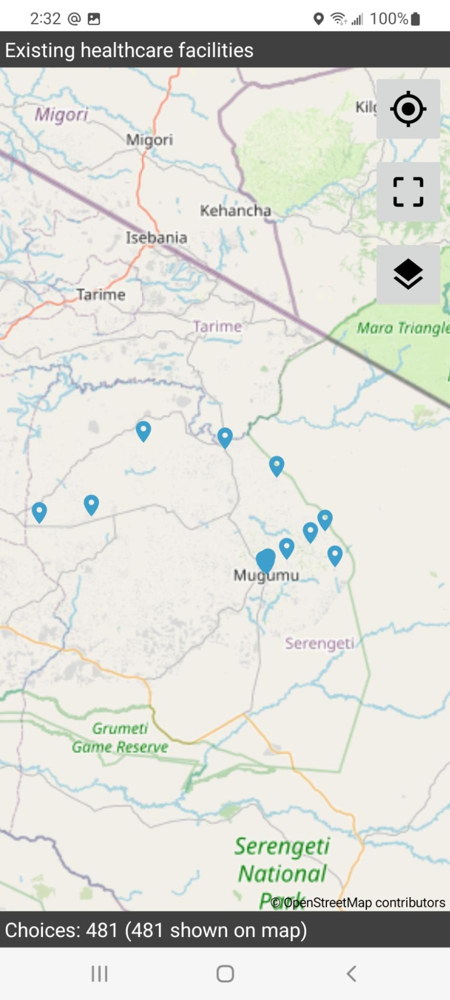

Improving XLSXForms¶
Document Summary¶
This documents the process of improving XLSXForms for better mapper efficiency and stability.
Background¶
XLSXForms provides a way to define input fields, their data types, and any constraints or validation rules that apply. It uses the XLSX file format and allows users to create forms by editing spreadsheets. It is compatible with ODK and other data collection platforms.
XLSForm is a powerful tool that allows users to create complex forms with advanced functionality, such as conditional questions, complex calculations, and multimedia inputs. However, it has a complex syntax, and it can be difficult for new users to learn. There are a few web-based front-ends for creating and editing XLSForms, but they don't support all of the advanced features of the format.
To use an XLSForm with a mobile app, it needs to be converted to the XML-based XForm format used by the apps. This conversion is done using a utility program called xls2xform which is part of the pyxform python package. Once the XLSForm has been converted to an XForm, it can be loaded onto a mobile device and used to collect data in the field.
XLSForms are widely used in the humanitarian and development sectors for data collection, monitoring, and evaluation. It is particularly popular for its flexibility and the ease with which it can be customized to meet specific needs. XLSForm has also been adopted by other platforms, such as Kobo Toolbox and SurveyCTO, making it a widely used standard for creating forms for mobile data collection.
The two primary mobile apps used at HOT that use XLSForms are OpenMapKit(OMK), and ODK Collect. OMK uses the same XLSX format as ODK Collect or Kobo Collect, so any comments about improving XLSXForms apply all of them. Using OMK has been depreciated as it's functionality has been incorporated into ODK Collect. It is unmaintained, and no longer works on newer phones.
Improving XLSXForm design can lead to more efficient data collection, allowing more good quality data to be collected in less time. Also for those of us use ODK based apps to collect data for OpenStreetMap(OSM), a well designed XLSForm is easier to convert and upload to OSM.
ODK¶
ODK is a software suite that includes a mobile app called ODK Collect and a server called ODK Central. ODK Collect is designed to run on Android devices and enables users to collect data in the field using forms created in the XLSXForms format. ODK Central is a server application that enables users to manage forms, data, and users, as well as to visualize and export collected data.
ODK Collect offers a wide range of functionality, including the ability to capture photos, videos, and audio recordings, and to collect GPS coordinates and other metadata. It also supports complex data types, such as repeat groups and geoshapes, and can be customized with the use of various add-ons.
While OMK was an earlier version of the ODK Collect app, most of its functionality has been migrated to ODK Collect. However, this document also provides information on how to modify old XForms from the OMK app to work with ODK Collect. ODK Collect is actively maintained, with regular updates and support services provided by the organization behind it.
OpenMapKit¶
OpenMapKit (OMK) is an extension of ODK that allows users to create professional quality mobile data collection surveys for field data collection. The tool was designed to simplify the process of collecting data for OpenStreetMap (OSM) in the field.
It was sponsored by the Red Cross and included a server and a mobile app that rans on Android operating system. However, the use of OMK is no longer recommended as it has not been maintained for several years and its functionality has been incorporated into ODK. It no longer runs on most newer phones.
One of the unique features of OMK was the use of a special field called osm in the survey sheet, which is the first page of the XLSX file. Additionally, OMK looked at another sheet called osm which replaced the existing choices sheet. The values in the osm sheet were designed to closely match the tagging scheme used by OpenStreetMap (OSM).
Because it is important to get collected data into OSM, the Humanitarian OpenStreetMap Team has developed a project called OSM Fieldwork, which can handle the conversion from ODK formats into OSM.
Overall, while OMK has been a useful tool in the past for data collection, it is no longer actively maintained, and users are encouraged to use ODK instead which offers more advanced functionality and support services.
XLSXForm Syntax¶
An XLSXForm is the source file for ODK based tools. This is edited in a spreadsheet program like LibreCalc, Excel, or Google Forms. There are also online build tools, but they fail to utilize the full functionality of XLSXForms. The program xls2xform, which is in the pyxform python package converts the spreadsheet to the format used by ODK Collect. You can also upload the spreadsheet to the ODK Central server, and it will convert it there.
This document is just a subset of all of syntax, and focuses on the most commonly used ones. To really dig deep into the XLSForm syntax go that documentation page.
Sheet Names¶
The sheet names are predefined to have specific functionality as follows, and the column headers are used to determine the functionality of the value in the cells of the spreadsheet. The sheets are Survey, Choices, and Settings. A few columns are required to exist in each sheet, the rest are optional.
Survey Sheet¶
- This sheet contains all the questions used for collecting data, and refers to the actual values for each question which are on the choices sheet.
These are the mandatory column headers in the survey sheet:
- Type - The type of question, the most common ones are text, select_one, select_multiple., and select_from_file The second argument in the type column is the keyword used as the list_name in the choices sheet for selection menus
- Name - Refers to the name of the choice keyword that would be the tag in the output OSM file
-
Label - Refers to the question the user sees
The name and label column headers also support different languages by using a postfix of ::language appended to it, for example label::Nepali(np).
These are the optional column headers in the survey sheet:
- Hint - Optional value display with
the question with further information
- The hint column also supports different languages by using a postfix of::languageappended to it, for example hint::Nepali(np).
- Default - Optional default value for a selection.
- Required - If the value is 1 or yes, this field must have an answer. If the value is 0 or no or blank, then it’s optional.
- Relevant - Allows to set up conditional display of questions based on other fields.
- Appearance - This changes how input fields are displayed on the screen.
- Calculation - Do a calculation, used for dynamic values.
- Choice_filter - Filters choices based on other surbay answers.
- Parameters - Change the behaviour of input data, or example the size of images.
Input Types¶
The Survey sheet has several forms of selecting answers. These allow the mapper to enter an interger, text, or select one or multiple items from a menu.
Choices Sheet¶
The choices sheet is used to define the values used for the select_one and select_multiple questions on the survey sheet.
The mandatory column headers are:
- List_name - This is the name of the list as specified in the select type in the survey sheet.
- Name - This becomes the value of the tag in the OSM output file.
- Label - Refers to what is displayed in the select menu.
- The label column header also supports different languages by using a postfix of ::language appended to it, for example label::Nepali(np).
Settings Sheet¶
For the settings sheet, there are 1 mandatory ones, but I usually always add 2 of the optional ones. This is a simple sheet that contains the version of the sheet, and the title of the input form. The version is used by the server and the mobile apps to track changes in the data format, so it should always be updated after changes are made.
- form_title - This is what is displayed in ODK Central
- form_id - This is a unique ID to identify this XForm.
- version - This is mandatory, and needs to change after major change. During development when I make many changes I usually use NOW() which is the current data. Use the date format with no spaces.
Mapping Answers to OSM¶
When designing an XForm whose data is for OSM, the two key columns that determine the tag & value scheme used in the OSM XML format are name in the survey sheet, which becomes the tag, and name in the choices sheet, which becomes the value. If you are using the OSM Fieldwork project, anything that isn't a one to one match with OSM syntax can be specified in the config file for that project. When using OSM Fieldwork, tags & values can also be specified as private data, which goes into a GeoJson file, and anything that is for OSM goes into an OSM XML file. That file can be edited in JOSM.
Screen Layout¶
ODK supports multiple options to change the layout of the input fields on the screen. In the XLSXForm, this is under the appearance column. There’s many possible options available to change the layout, but here’s a summary of the primary ones.
- Minimal - Answer choices appear in a pull-down menu.
- Field-list - Entire group of questions appear on one screen
- Parameter-map - Use a basemap to pick the location
- Quick - Auto-advances the form to the next question after an answer is selected
- All fields are grouped together to maximize screen space.
- When the field-list attribute is set for begin_group, then multiple questions are on the same screen.
- The screen can be scrolled if there are more input fields than fit.
| type | name | label | appearance |
|---|---|---|---|
| begin_group | agroup | Amenity Details | field-list |
| select_one text | name | Amenity Name | minimal |
| select_one amenity | amenity | Type of Amenity | minimal |
| end_group |
Conditionals¶
ODK can optionally display input fields for questions based on a selection. Using conditionals allows for a more guided user interface, than just presenting many questions, some of which aren’t relevant to the current mapping task.
Using Conditionals¶
- Conditionals go in the relevant column on the survey sheet.
- A conditional has two parts, the variable from the name column of a question, and the value to test against, which is one of the select values.
In the XLSXForm, the spreadsheet should look like this. The amenity menu is only displayed if the answer to the “what type of building is this” is “commercial”.
| type | name | label | relevant |
|---|---|---|---|
| select_one amenity | amenity | Type of Amenity | ${building}=’commercial’ |
Using conditionals allows for a more dynamic interface, as only relevant questions are displayed. Some questions may have answers that only require a few more questions before being complete. Other answers may generate more questions, for example a commercial building instead of a residence.
Grouping¶
ODK supports grouping survey questions together, which when used with conditionals in the relevant column, and attributes from the appearance column, creates a more dynamic user interface. Groups allow more than one question on the screen, which is more efficient than one question per screen, which is the default.
Using Grouping¶
- Groups are defined in the survey sheet.
- Using the appearance column can display multiple questions on each screen, minimizing the actions required to enter data.
Sub groups are also supported. When implemented this way, when the top level group is displayed on the screen, other questions can be dynamically added to the screen display based on what is selected, further minimizing required actions. Using the appearance column settings with grouping can create a more efficient user experience. Ungrouped questions appear one on each screen of the mobile data collection app, requiring one to swipe to the next page for each question.
- Begin_group
- Can use the relevant column to conditionally display the entire group of questions
- End_group
- End the group of survey questions
An example grouping would look like this, and the conditional says to only display this group for commercial buildings.
| type | name | label | relevant |
|---|---|---|---|
| select_one type | building | What type of building ? | |
| begin_group | amenity | ${building}=’commercial’ | |
| select_one amenity | amenity | Type of Amenity | |
| text | name | What is the name ? | |
| end_group |
In this example, the conditional is applied to the entire group of questions, and not just any individual question. Different questions in the group may have different conditionals.
External Datasets¶
XLSForms support external datasets, which is useful for common choices that can be shared between multiple XLSForms. CSV, XML, or GeoJson files are supported. The one downside is currently external datasets of choices do not support translations, one language only. Each CSV file needs a header that defines at least the name and label columns. The name becomes the tag in OSM, and the label is what ODK Collect displays in the select menu. An id column is also required. Anything else becomes a column in the XLSForm.
An example CSV data file would look like this:
| label | name | backcountry | id | ref | tourism | openfire |
|---|---|---|---|---|---|---|
| Test 1 | Site 1 | yes | 5483233147 | 1 | camp_pitch | yes |
| Test 2 | Site 35 | no | 6764555904 | 35 | camp_pitch | yes |
For example, these rows in the survey sheet will load the data from the CSV file. The instance is the name of the data file, minus the suffix. The item is what the XForm has in the name column for the select_one_from_file. Then the last part is the column from the OSM data. Whenever the value of test is changed, the trigger goes off, and the value is recalculated and becomes the default value for the survey question.
| type | name | label | calculation | trigger | choice |
|---|---|---|---|---|---|
| select_one_from_file test.csv | test | CSV test | true() | ||
| calculate | xname | Name | instance('test')/root/item[name=${test}]/label | ${test} | |
| text | debug | Name is | ${xname} | ${test} |
GeoJson Files¶
An external file in GeoJson format works slightly differently, as it also contains GPS coordinates. This allows ODK Collect to display data on the map as an overlay that can be selected. This lets us make a data extract from OSM data and edit it. In OSM, many buildings are tagged building=yes, as that’s about all you can do when doing remote mapping off satellite imagery. ODK Collect can’t handle polygons yet, so a data extract has to use only POIs. To use a GeoJson file, just change the file name in this example. The only other difference is that since the GeoJson data file contains GPS coordinates, you can get either a map or a normal selection menu. To get the map view, put map in the appearance column.
When using a GeoJson data file, after opening the XForm, you’ll get a button to select an existing POI. That’ll open either the menu, or the map. For the map view, you’ll see blue markers where the existing features are, Touching an icon loads that data into ODK Collect. You can access the values in the OSM data the same as the above example.
OpenStreetMap Data¶
OpenStreetMap (OSM) is a popular tool for mapping and collecting geographic data, and many OSM mappers have wanted the ability to edit data in the field. While mobile apps like StreetComplete or Vespucci allow for this, they don't focus on humanitarian data collection, which can lead to incomplete tags on many features. Until recently, OSM mappers collected a new point of interest (POI) in the field and merged the data manually later on using an editor like JOSM. However, with the addition of functionality to ODK Collect, it's now possible to load data from OSM into the app and use XForms to improve feature data, achieving tag completeness and limiting tag values to accepted values.
In the past, if a mapper collected a new point of interest (POI) in the field, they would have to manually merge the data later using an editor like JOSM because OSM data typically had few tags beyond building=yes due to the majority of features being added by remote mapping. However, with the recent addition of functionality in ODK Collect, it is now possible to load data from OSM into ODK Collect. This allows for the use of an XForm to improve feature data, which achieves tag completeness for a feature and limits the tag values to accepted values.
To create a data extract from OSM, one can use Overpass Turbo or Postgres. Each tag in OSM becomes a column in an XForm, and the column names are used to reference the data from within the XForm. If you are using the OSM data to set the default value for a select_one_from_file, then every possible value used for that tag needs to be in the choices sheet. Otherwise, you will get an error such as doctor is not in the choices for healthcare.
Using OSM in ODK Collect requires two data conversion processes. The first step is to produce the data extract. Since the goal is to convert the data from ODK into OSM, OSM standard tags should be used in the name column in the survey and choices sheets. When doing a query to Overpass or Postgres, the column name will conflict with what is in the survey sheet, so the data extract needs to use something else. For Postgres, this is easy as you can use the AS command in the query to rename the column to whatever you want. Abbreviations or the OSM tag's name are often used as variable names internally, but the important thing is to ensure that they are unique and do not conflict with other names in the XForm. There is a much more detailed document on using OSM data extracts in this Dealing with External Data in ODK document.

Converting from OMK to ODK¶
The OMK mobile app was used for collecting location data using the GPS on the device, or tapping on a basemap. Because that functionality is now in ODK, the usage of the OMK mobile app is not required, and is not maintained and may be unreliable. This section is only useful if you find yourself with an old XForm that you want to edit and reuse, as none of it applies to ODK or Kobo Collect.
Step 1 - Prepare Data¶
The first step is to copy the contents of the osm sheet into the choices sheet, The other option is to delete the choices sheet, and then rename the osm sheet to choices.
Step 2 - Migrate Questions¶
The next step is to migrate the questions. The osm keyword in the survey sheet is followed by a variable name, for example in this table, building_tags is the variable. When looking at the choices sheet, every row using the building_tag keyword now has to become a question on the survey sheet.
| type | name | label | required |
|---|---|---|---|
| osm building_tags | osm_building | Building Form | yes |
In the choices sheet, we see this existing data.
| list_name | name | label |
|---|---|---|
| building_tags | name | Name of this building |
| building_tags | building:material | What is it made from ? |
| building_tags | building:roof | What is the roof made of ? |
Cut & paste these rows from the choices sheet, and paste them into the survey sheet. Then prefix the variable with selct_one or select_multiple. Drop the prefix used in the choices sheet and simplify it.
| type | name | label |
|---|---|---|
| text | name | Name of this building |
| select_one building:material | material | What is it made from ? |
| select_one building:roof | roof | What is the roof made of ? |
Step 3 - Get Coordinates¶
The last step is replacing the keyword that used to start OMK, with the ODK way. There are three ODK keywords that can be used to get a location.
- Geopoint - Collect a single location
- Geoshape - Collect at least 3 points and the ends are closed
- Geotrace - Collect a trace of a line
By default these keywords only allow you to get the location of where the user is located. If you want to use a basemap and tap on the screen where you want to get the location, add placement-map into the appearances column.
After doing these three steps, your XLSXForm is converted to not use the OMK app anymore.
XLSXForm Suggestions¶
Since mobile data collection often involves gathering many of the same types of data, setting defaults helps reduce the number of user actions needed to collect data. When collecting multiples of the same type of data,good defaults can record data even when only the location has changed.